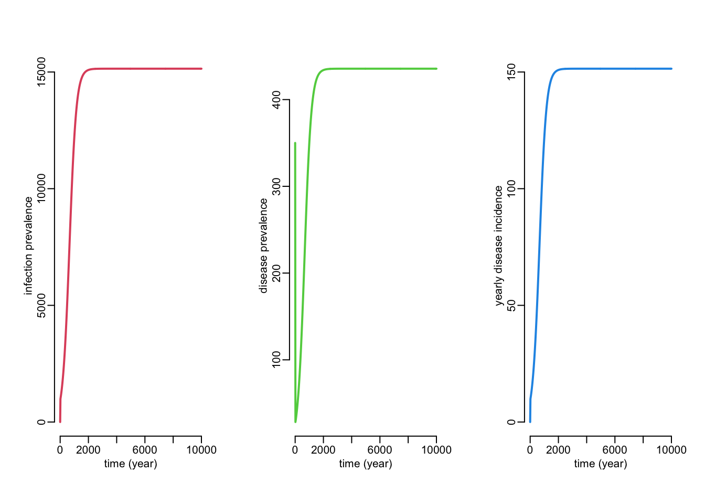
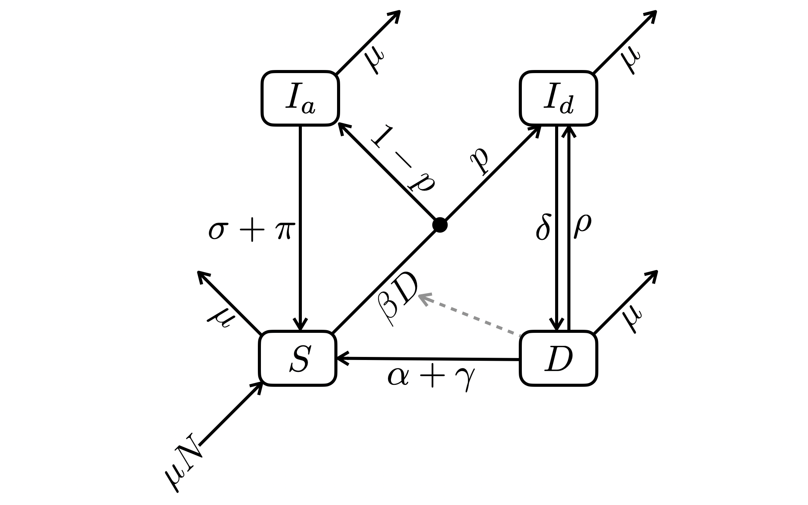

library(tibble)TPT model
All the data and source code files are here.
You can ask report errors or for additional analysis here.
1 Introduction
2 Packages
Required: deSolve, tibble
3 Utilitary functions
ode2 <- function(...) tibble::as_tibble(as.data.frame(deSolve::ode(...)))seq2 <- function(...) seq(..., le = 512)plotl <- function(...) plot(..., type = "l", lwd = 2)lines2 <- function(...) lines(..., lwd = 2)legend2 <- function(...) legend(..., bty = "n")4 \(SID\) model
The simplest model we could imagine is a model with only 3 variables: those not infected, those infected but not infectious, and those infected, sick and infectious. This model contains human demography but the total population size is kept constant (i.e. birth and death rates are equal). It also contains:
- clearance from both infected (natural or through prophylaxis) and diseased (natural or through curative treatment)
- curation can be with or without sterilization
- relapse (following recovery without clearance)
- mortality from diseased

4.1 Variables
- \(S\): non-infected
- \(I\): infected (and not infectious)
- \(D\): sick and infectious
Note that \(S + I + D = N\) where \(N\) is a constant.
4.2 Parameters
- \(\beta\): infectious contact rate (/ind)
- \(\sigma\): clearance rate of \(I\), either through natural immunity or prophylactic treatment
- \(\delta\): progression rates of infection to disease
- \(\rho\): rate of recovery without clearance (ultimately leading to relapse)
- \(\gamma\): rate of recovery with clearance either from treatment or natural immunity
- \(q\): probability that curation comes with sterilization
- \(\mu\): demographic turn-over rate (i.e. birth and death rates equal, see assumption on constant population size)
- \(\alpha\): death rate due to TB
4.3 Dynamics
Differential equations
\[ \begin{align} \frac{dS}{dt} &= \mu N + (\sigma + \pi) I + (\alpha + q\gamma) D - (\beta D + \mu) S \\ \frac{dI}{dt} &= \beta D S + (\rho + [1 - q] \gamma) D - (\sigma + \pi + \delta + \mu) I \\ \frac{dD}{dt} &= \delta I - (\alpha + \gamma + \rho + \mu) D \end{align} \]
R code:
sid <- function(
S0, I0, D0, beta, sigma, delta, gamma, q, rho, mu, alpha, pi, times) {
N <- S0 + I0 + D0
ode2(c(S = S0, I = I0, D = D0),
times,
function(time, state, pars) {
with(as.list(c(state, pars)), {
foi <- beta * D * S
dS <- mu * (N - S) + (sigma + pi) * I + (alpha + q * gamma) * D - foi
dI <- foi + (rho + (1 - q) * gamma) * D - (sigma + pi + delta + mu) * I
dD <- delta * I - (alpha + gamma + rho + mu) * D
list(c(dS, dI, dD))
})
},
c(beta = beta, sigma = sigma, delta = delta, gamma = gamma, q = q, rho = rho,
mu = mu, alpha = alpha, pi = pi))
}sid_sim <- sid(S0 = 1e5 - 350,
I0 = 0,
D0 = 350,
beta = .00001,
sigma = 0, #.1,
delta = .04,
gamma = 1,
q = .1,
rho = 0,
mu = 1 / 70,
alpha = 1 / 3,
pi = 0,
times = seq2(0, 10000))
opar <- par(mfrow = c(1, 3))
with(sid_sim, {
plotl(time, I, col = 2, xlab = "time (year)", ylab = "infection prevalence")
plotl(time, D, col = 3, xlab = "time (year)", ylab = "disease prevalence")
plotl(time, .04 * I, col = 4, xlab = "time (year)", ylab = "yearly disease incidence")
})
par(opar)sid_sim <- do.call(sid, list(S0 = 1e5 - 350,
I0 = 0,
D0 = 350,
beta = .00001,
sigma = 0, #.1,
delta = .04,
gamma = 1,
q = .1,
rho = 0,
mu = 1 / 70,
alpha = 1 / 3,
pi = 0,
times = seq2(0, 10000)))
opar <- par(mfrow = c(1, 3))
with(sid_sim, {
plotl(time, I, col = 2, xlab = "time (year)", ylab = "infection prevalence")
plotl(time, D, col = 3, xlab = "time (year)", ylab = "disease prevalence")
plotl(time, .04 * I, col = 4, xlab = "time (year)", ylab = "yearly disease incidence")
})
par(opar)4.4 Calibration
- infection prevalence: somewhere between 10 and 30% of the population
- disease prevalence: somewhere between 50 and 500 / 100,000
- disease incidence:
5 \(SI_aI_dD\) model
Compared to the \(SID\) model, the \(SI_aI_dD\) model separates the infected who will ultimately develop the disease (\(I_d\)) with probability \(p\) from those who will not (\(I_a\)). The later can spontaneously clear the bacillus.

5.1 Variables
- \(S\): non-infected
- \(I_a\): infected (and not infectious) and that will never become infectious
- \(I_d\): infected (and not infectious) and that ultimately become infectious
- \(D\): sick and infectious
- \(N = S + I_a + I_d + D\)
5.2 Parameters
- \(\beta\): infectious contact rate (/ind)
- \(p\): proportion of infected that will ultimately become infectious
- \(\sigma\): clearance rate of \(I\), either through natural immunity or prophylactic treatment
- \(\delta\): progression rates of infection to disease
- \(\rho\): rate of recovery without clearance (ultimately leading to relapse)
- \(\gamma\): rate of recovery with clearance either from treatment or natural immunity
- \(\mu\): demographic turn-over rate (i.e. birth and death rates equal, see assumption on constant population size)
- \(\alpha\): death rate due to TB
5.3 Dynamics
Differential equations:
\[ \begin{align} \frac{dS}{dt} &= \mu N + \sigma I_a + (\alpha + \gamma) D - (\beta D + \mu) S \\ \frac{dI_a}{dt} &= (1 - p) \beta D S - (\sigma + \mu) I_a \\ \frac{dI_d}{dt} &= p \beta D S + \rho D - (\delta + \mu) I_d \\ \frac{dD}{dt} &= \delta I_d - (\alpha + \gamma + \rho + \mu) D \end{align} \]
R code:
sid_mod <- function(
S0, I0, D0,
beta, sigma, delta, gamma, rho, mu, alpha, times) {
N <- S0 + I0 + D0
ode2(c(S = S0, I = I0, D = D0),
times,
function(time, state, pars) {
with(as.list(c(state, pars)), {
foi <- beta * D * S
dS <- mu * (N - S) + sigma * I + (alpha + gamma) * D - foi
dI <- foi + rho * D - (mu + sigma + delta) * I
dD <- delta * I - (mu + alpha + gamma + rho) * D
list(c(dS, dI, dD))
})
},
c(beta = beta, gamma = gamma, rho = rho, sigma = sigma,
delta = delta, mu = mu, alpha = alpha))
}5.4 Equilibrium
Equations:
\[ \begin{align} S^* &= N - I_a^* - I_d^* - D^* \\ I_a^* &= \frac{(N - I_d^* - D^*) (1 - p) \beta D^*}{(1 - p) \beta D^* + \sigma + \mu} \\ I_d^* &= \frac{\alpha + \gamma + \rho + \mu}{\delta} D^* \\ D^* &= \frac{p \beta \delta N - (\alpha + \gamma) (\delta + \mu) - (\gamma + \delta + \rho + \mu) \mu} {(\alpha + \gamma) [(1 - p) \delta + p \sigma + \mu] + (p \sigma + \mu) (\delta + \rho + \mu)} \frac{\sigma + \mu}{\beta} \end{align} \]
R code:
sid_equ <- function(N, beta, sigma, delta, gamma, rho, mu, alpha) {
Dstar <- (beta * delta * N - (delta + mu + rho) * mu - (mu + rho) * sigma -
(delta + mu + sigma) * (alpha + gamma)) /
(beta * (alpha + gamma + delta + mu + rho))
Istar <- (mu + alpha + gamma + rho) * Dstar / delta
c(Sstar = N - Istar - Dstar,
Istar = Istar,
Dstar = Dstar)
}5.5 Numerical verification
pvlc <- 350
sid_mod_sim <- sid_mod(
S0 = 1e5 - pvlc,
I0 = 0,
D0 = pvlc,
beta = 1.2e-5,
sigma = 0, #.1,
delta = - log(1 - .9) / 2,
gamma = 1 / 1.5,
rho = 0, #.15,
mu = 1 / 70,
alpha = .3,
times = seq2(0, 100)
)
sid_equ_val <- sid_equ(
N = 1e5,
beta = 1.2e-5,
sigma = 0, #.1,
delta = - log(1 - .9) / 2,
gamma = 1 / 1.5,
rho = 0, #.15,
mu = 1 / 70,
alpha = .3
)
with(sid_mod_sim, {
plotl(time, D, col = 3, xlab = "time (year)", ylab = "number of individuals")
lines2(time, I, col = 4)
})
abline(h = sid_equ_val[c("Dstar", "Istar")], col = c(3, 4))
legend2("bottomright", legend = c("infected", "diseased"), col = 4:3, lwd = 2, lty = 1)
6 Epidemiological model
6.1 Assumptions
- Constant population size
- No population structure other than clinical status
6.2 Variables
- \(S\): non-infected
- \(I_1\): recently infected
- \(I_2\): infected a long time ago
- \(I_3\): treated but not sterilized
- \(D\): sick and infectious (we do not discriminate PTB from EPTB)
- \(N = S + I_1 + I_2 + I_3 + D\)
Note: only \(D\) are infectious.
6.3 Parameters
- \(\beta\): infectious contact rate (/ind)
- \(\sigma_1\) and \(\sigma_2\): clearance rates of \(I_1\) and \(I_2\) respectively, either through natural immunity or prophylactic treatment
- \(\delta_1\), \(\delta_2\) and \(\delta_3\): progression rates of infection to disease for \(I_1\), \(I_2\) and \(I_3\) (relapse) respectively
- \(\gamma\): rate of recovery with clearance either from treatment or natural immunity
- \(\rho\): rate of recovery without clearance (ultimately leading to relapse)
- \(\tau\): rate at which infected transit from a status of recent infection to a status of non-recent infection
- \(\mu\): demographic turn-over rate (i.e. birth and death rates equal, see assumption on constant population size)
- \(\alpha\): death rate due to TB
Note: all these rates are per year and per capita.
6.4 Flow diagram

6.5 Differential equations
\[ \begin{align} \frac{dS}{dt} &= \mu N + \sigma_1 I_1 + \sigma_2 I_2 + \gamma D - \left(\mu + \beta \frac{D}{N} \right) S \\ \frac{dI_1}{dt} &= \beta \frac{D}{N} S - (\mu + \sigma_1 + \delta_1 + \tau) I_1 \\ \frac{dI_2}{dt} &= \tau I_1 - (\mu + \delta_2 + \sigma_2) I_2 \\ \frac{dI_3}{dt} &= \rho D - (\mu + \delta_3) I_3 \\ \frac{dD}{dt} &= \delta_1 I_1 + \delta_2 I_2 + \delta_3 I_3 - (\mu + \alpha + \gamma + \rho) D \end{align} \]
6.6 R code
epi_dynamics <- function(
S0, I10, I20, I30, D0,
beta, sigma1, sigma2, delta1, delta2, delta3, gamma, tau, rho, mu, alpha, times) {
N <- S0 + I10 + I20 + I30 + D0
ode2(c(S = S0, I1 = I10, I2 = I20, I3 = I30, D = D0),
times,
function(time, state, pars) {
with(as.list(c(state, pars)), {
foi <- beta * D * S / N
dS <- mu * (N - S) + sigma1 * I1 + sigma2 * I2 + gamma * D - foi
dI1 <- foi - (mu + sigma1 + delta1 + tau) * I1
dI2 <- tau * I1 - (mu + delta2 + sigma2) * I2
dI3 <- rho * D - (mu + delta3) * I3
dD <- delta1 * I1 + delta2 * I2 + delta3 * I3 - (mu + alpha + gamma + rho) * D
list(c(dS, dI1, dI2, dI3, dD))
})
},
c(beta = beta, gamma = gamma, rho = rho,
sigma1 = sigma1, sigma2 = sigma2,
delta1 = delta1, delta2 = delta2, delta3 = delta3,
mu = mu, alpha = alpha))
}6.7 TB data
- infection prevalence: 322 (95% CI: 260–399) TB cases/100,000 adults (Nguyen et al. PLoS ONE 2020)
- 5-10% of those infected develop TB in their lifetime
- among those who develop disease, about 90% do so within 2 years
- 125,000 new TB cases in Vietnam in 2018
If \(p\%\) of those who develop disease (to \(D\)) do so within \(E\) years, then the \(\tau\) rate should read:
\[ \tau \simeq -\frac{\ln(1 - p)}{E} \]
If \(q%\) of those infected develop TB in their lifetime, then
\[ \delta_1 = \delta_2 \simeq \frac{q}{1 - q} \mu \]
prevalence <- 100
mu_val <- .02
sigma <- .1
delta <- mu_val * .075 / (1 - .075)
sims <- epi_dynamics(
S0 = 1e5 - prevalence,
I10 = 0,
I20 = 0,
I30 = 0,
D0 = prevalence,
beta = 800,
sigma1 = sigma,
sigma2 = sigma,
delta1 = delta,
delta2 = delta,
delta3 = .01,
gamma = 1 / 1.5,
tau = - log(.9) / 2, # - log(1 - .9) / 2,
rho = .15,
mu = mu_val,
alpha = .3,
times = seq2(0, 30))with(sims, {
plotl(time, D, ylim = c(0, 100000))
lines2(time, I1 + I2 + I3, col = 2)
})
with(sims, plotl(time, I1 / (I1 + I2), ylim = 0:1))